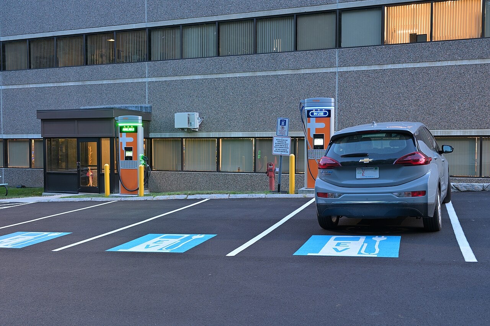

How to read these charts
The charts on this page follow three questions: when public charging was built in Massachusetts, where it is, and who runs it. All three count ports, and a port is a place where one vehicle can plug in. Stations can have several ports, and several stations can share an address, so we count ports to show capacity and addresses to show locations.
Charger level comes up throughout. Level 1 chargers use an ordinary household outlet and are the slowest, and only 6 of the state's public ports are Level 1. Level 2 chargers are faster and suit places where a car stays parked for hours, such as a workplace or a parking garage. They make up 83% of ports. DC fast chargers are the quickest and suit shorter stops, and they make up the remaining 17%.

The level changes how each pattern reads. A cluster of Level 2 ports helps people who can leave a car parked for hours, while a DC fast station helps someone who needs a quick stop. That is why we compare the levels side by side wherever we can. A network is the company that operates a charger, and the last chart shows that the leading company for one level isn't necessarily the leader for the other.
1. When
Most of today's ports opened after 2020
Only 1,475 of today's 11,866 ports opened before 2021. Level 2 makes up most of the network, while about two thirds of DC fast ports were added since the start of 2024.
Running total of ports at stations open today, by the year each station opened. 2026 runs through October 12. Stations that have since closed are not counted, so this is not the full history of the network. Level 1 has only 6 ports, too few to see on this scale.
Show the data as a table
2. Where
Charging clusters around Boston, and fast charging is more spread out
62% of all ports are within 25 miles of downtown Boston, compared with 44% of DC fast ports. Each dot is one address, and a bigger dot means more ports.
Move the slider to replay the build-out, or hover over a dot for details. Color shows the fastest charger at each address among stations open by the selected year. Ports at one address can belong to more than one network. The dashed ring marks 25 miles from downtown Boston.
Show the top 10 cities as a table
3. Who
One network leads Level 2, but fast charging is split differently
ChargePoint runs 66% of Level 2 ports but only 15% of DC fast ports. Tesla and Red E together run 58% of DC fast ports.
Built with D3. Hover over a bar for details. Share of each charger level's ports, on the same scale in both panels. Tesla combines the Tesla and Tesla Destination networks.
Show the data as a table
About the data
The data comes from the Alternative Fuels Data Center at the U.S. Department of Energy. We downloaded it on October 12, 2026 and filtered it to electric stations in Massachusetts that are public and available. County outlines come from the Census-based us-atlas boundary files.
Keep three limits in mind:
- Opening dates: these are as reported to the AFDC and may reflect when a network's data entered the database, so a jump in one year may not all be new construction.
- "Public" access: this includes 31 records (124 ports) flagged as restricted, such as chargers for hotel guests only.
- Who benefits: this data shows where ports are and who runs them. It does not show who uses them or who lives nearby.